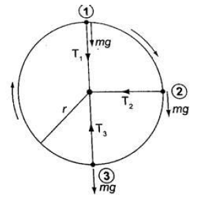

Consider a mass ‘m’ tied to a string of length ‘r’ and moving in a vertical circle as shown below 
At position 1 –both weight (mg) and tension T are in the same direction and the centripetal force is provided by both, hence T1 + mg = mv2/r. T1 = mv2/r – mg (The velocity decreases as T1 decreases since mg is constant). T1 will be zero when mv2/r = mg and thus v = √rg – this is the value of minimum speed at position 1 which keeps the body in a circle and at this time when T = 0 the string begins to slacken.
At position 2 – the ‘mg’ has no component towards the centre thus playing no part in providing the centripetal force but is provided by the string alone. T2 = mv2/r
At position 3 – ‘mg’ and T arein opposite directions, therefore; T3 – mg = mv2/r; T3 = mv2/r + mg – indicates that the greatest value of tension is at T3 or at the bottom of the circular path.
Examples
A ball of mass 2.5 × 10-2 kg is tied to a string and whirled in a horizontal circular path at a speed of 5.0 ms-2. If the string is 2.0 m long, what centripetal force does the string exert on the ball? Solution Fc = mv2/r = [(2.5 × 10-2 ) × 52]/2.0 = 0.31 N.
A car of mass 6.0 × 103 kg is driven around a horizontal curve of radius 250 m. if the force of friction between the tyres and the road is 21,000 N. What is the maximum speed that the car can be driven at on a bend without going off the road? Solution Fc = force of friction = 21,000, also Fc = mv2/r, hence 21,000 = [(6.0 × 103 ) × v2]/250, v2 = (21,000 × 250)/6.0 × 103
A stone attached to one end of a string is whirled in space in in a vertical plane. If the length of the string is 80 cm, determine the minimum speed at which the stone will describe a vertical circle. (Take g = 10 m/s2 ). Solution Minimum speed v = √rg = √(0.8 × 10) = 2.83 m/s.